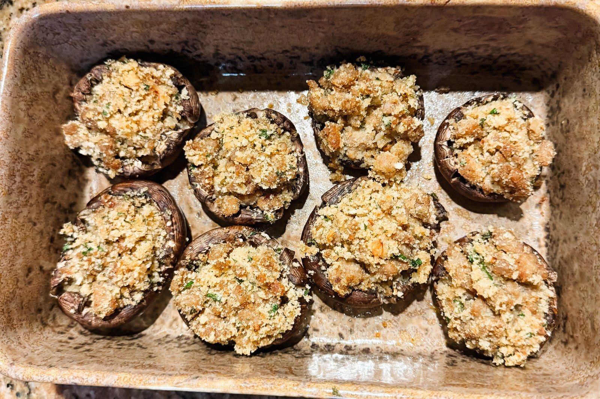

She’s the Goose

Holiday · Appetizer
Large cremini mushrooms filled with sweet Italian sausage, sautéed garlic and shallots, Parmesan cheese, Italian breadcrumbs, and plenty of fresh parsley. A traditional, savory appetizer baked until golden.
Prepare the mushrooms. Preheat the oven to 375°F. Wipe the mushrooms clean with a damp paper towel. Remove and discard the stems. Arrange caps, hollow side up, in a lightly oiled baking dish.
Sauté the aromatics. Heat the olive oil in a large skillet over medium heat. Cook the shallots for 3–4 minutes, until softened. Add garlic and cook for another minute, stirring until fragrant.
Brown the sausage. Add the sweet Italian sausage, breaking it into small crumbles. Cook for 8–10 minutes, stirring occasionally, until browned and cooked through.
Make the filling. Remove from heat. Stir in breadcrumbs, Parmesan, and parsley. Add pepper and salt to taste, remembering the sausage and cheese are already seasoned. If the filling seems dry, stir in 1–2 tablespoons of water or chicken broth.
Stuff the mushrooms. Spoon the filling generously into each cap, pressing lightly and mounding above the top.
Bake. Sprinkle with additional Parmesan. Bake uncovered for 20–25 minutes, until the mushrooms are tender and tops are lightly golden.
Serve. Finish with fresh parsley and serve warm.
Keep the sausage finely crumbled and use just enough breadcrumbs to hold everything together. The filling should be moist and savory, not dry or bready.
Make ahead. Stuff the mushrooms up to one day ahead. Cover and refrigerate; add a few minutes to the baking time if cooking straight from the refrigerator.
Letters from She’s the Goose
A letter and a recipe from me, every Tuesday.
Thank you — look for a note to confirm.